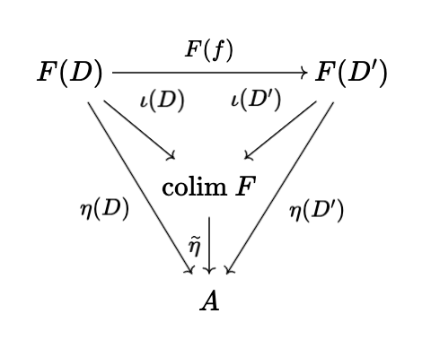
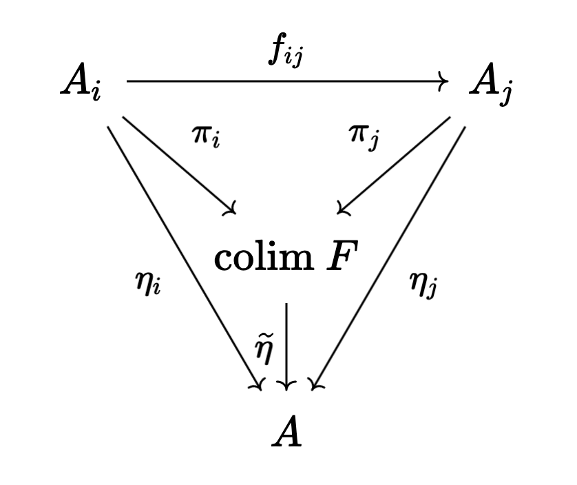

Seifert-Van Kampen for fundamental groupoids in painful detail
Table of Contents
Originally posted: June 11th, 2025
1. Introduction
This blog post is a debt I have been meaning to pay for the past two years. I have always felt a certain amount of guilt invoking the Seifert Van-Kampen theorem, because in my opinion, most of the proofs in the literature at a bit hand-wavy/gloss over some of the important details (particularly, Hatcher and May). The aim of this writeup is to more or less start from scratch, and build all of the necessary theory to prove a generalized version of the Seifert-Van Kampen theorem for fundamental groupoids. We are then able to derive the classical fundamental group SvK as a corollary. May's book presents a proof of "fundamental groupoid SvK", but as I mentioned, it glosses over a ton of details which I personally think are non-obvious. Hopefully other math students, who feel a similar unease about invoking SvK, find this post useful in assuaging their guilt!
In order to write this post, I used three books: Hatcher, May, and Munkres. Each are very good in their own right, and I'm hoping that combining and building upon the sum total of their material will yield the best explanation.
2. Background
2.1. Categorical preliminaries
Given a topological space \(X\), the fundamental groupoid \(\Pi(X)\) is defined to be the category with the points of \(X\) as objects, and path homotopy classes between points as arrows. It is easy to see that \(\Pi(X)\) is, in fact, a groupoid (i.e. a category with reversible arrows). Note that given \(x \in X\), \(\text{Mor}_{\Pi(X)}(x, x) \simeq \pi_1(X, x)\), the fundamental group (this is also easy to see). Let us briefly review some categorical terminology:
Definition 2.2.1 (Skeleton). Given cateogry \(\mathcal{C}\), we define \(\text{sk}(\mathcal{C})\), a skeleton of \(\mathcal{C}\), to be a full subcategory with objects consisting of one object from each isomorphism class in \(\mathcal{C}\). Note that in a groupoid, if there is an arrow between objects, there is an isomorphism between them. It follows that in \(\Pi(X)\), there is exactly one isomorphism class of objects corresponding to each path component of \(X\). Moreover, if \(X\) is path-connected, so there is a single isomorphism class, it is clear that \(\pi_1(X, x)\) is a skeleton of \(\Pi(X)\) for any \(x \in X\).
Proposition 2.2.1. If \(\mathcal{C}\) is a category and \(\text{sk}(\mathcal{C})\) is a skeleton, then these are equivalent categories.
Proof. Let \(J : \text{sk}(\mathcal{C}) \rightarrow \mathcal{C}\) be the inclusion functor. We define functor \(F : \mathcal{C} \rightarrow \text{sk}(\mathcal{C})\) as follows: we take \(a \in \text{Obj}(\mathcal{C})\) to \(F(a)\), the element in the skeleton which is isomorphic to \(a\). For each \(a \in \text{Obj}(\mathcal{C})\), pick some isomorphism \(j_a : a \rightarrow F(a)\). In the case that \(a \in \text{Obj}(\text{sk}(\mathcal{C}))\), so \(F(a) = a\), take \(j_a = \text{id}\). We then define for \(f \in \text{Mor}_{\mathcal{C}}(a, b)\) the arrow \(F(f) \in \text{Mor}_{\text{sk}(\mathcal{C})}(F(a), F(b))\) to be \(F(f) = j_b \circ f \circ j_a^{-1}\). It is easy to see that \(F\) is a functor. Moreover, it is clear that \(FJ\) is the identity. We require natural transformation \(JF \simeq \text{Id}_{\mathcal{C}}\).
For some \(a \in \text{Obj}(\mathcal{C})\), define \(\eta(a) : JF(a) \rightarrow a\) via \(\eta(a) = j_a^{-1}\), which makes sense as \(JF(a) = F(a)\). Note that if \(f \in \text{Mor}_{\mathcal{C}}(a, b)\), then
\begin{equation} \eta(b) \circ JF(f) = j_b^{-1} \circ j_b \circ f \circ j_a = f \circ j_a = JF(f) \circ \eta(a) \end{equation}so \(\eta\) is in fact a natural transformation, and we have the desired equivalence of categories. \(\blacksquare\)
The moral of this categorical digression is to emphasize that fundamental groups and fundamental groupoids are equivalent in a nice way, and as a result, it makes sense that the SvK theorem for fundamental groupoids will yield the SvK theorem for fundamental groups.
Definition (\(\mathcal{D}\) -shaped diagram in \(\mathcal{C}\)). Is a functor \(F : \mathcal{D} \rightarrow \mathcal{C}\), where \(\mathcal{D}\) is a small category. We can define a category of \(\mathcal{D}\) -shaped diagrams, in \(\mathcal{C}\), denoted \(\mathcal{D}[\mathcal{C}]\) by taking arrows to be natural transformation of functors. Inside \(\mathcal{D}[\mathcal{C}]\), given \(C \in \text{Obj}(\mathcal{C})\), denote the constant diagram sending every object of \(\mathcal{D}\) to \(C\) and every arrow to \(\text{id}_C\) by \(\underline{C}\).
Definition (Colimit). A colimit \(\text{colim} \ F\) of \(\mathcal{D}\) -shaped diagram \(F\) over \(C\) is an object in \(\mathcal{C}\) and a morphism of diagrams \(\iota : F \rightarrow \underline{\text{colim} \ F}\) such that if \(\eta : F \rightarrow \underline{A}\) is another morphism of diagrams, then there exists a unique morphism \(\widetilde{\eta} : \text{colim} \ F \rightarrow A\) in \(\mathcal{C}\) such that the following diagrams commute

for every morphism \(f : D \rightarrow D'\) in \(\text{Mor}(\mathcal{D})\).
Example 2.2.1. (Direct limits). The whole point of colimits is to extract the underlying essence (universal property) which uniquely determine algebraic direct limits. In particular, suppose we take our small category \(\mathcal{D}\) to be a directed set \(I\) with preorder \(\leq\) (where we also have upper-bounds on pairs). In other words, \(\text{Obj}(\mathcal{D}) = I\), and there is an arrow from \(x\) to \(y\) if \(x \leq y\). Transitivity and reflexivity ensure that these arrows define a valid category. On the other hand, suppose \(\mathcal{C}\) is some "algebraic category" (i.e. \(\textbf{Grp}\) or \(\textbf{Ring}\) or something similar). Suppose we have some collection of objects \(A_i \in \mathcal{C}\) for each \(i \in I\) and we have an arrow for each \(i \leq j\), \(f_{ij} : A_i \rightarrow A_j\) such that \(f_{ii} = \text{id}\) and \(f_{ik} = f_{jk} \circ f_{ij}\) if \(i \leq j \leq k\). We then can define a \(\mathcal{D}\) -shaped diagram over \(\mathcal{C}\) as \(F(i) = A_i\) for \(i \in I\) and \(F(i \rightarrow j) = f_{ij}\). By nature of how we chose the morphisms in \(\mathcal{C}\), checking that this is a functor is trivial.
Note that if \(A\) is some object in \(\mathcal{C}\), any morphism of diagrams \(\eta : F \rightarrow \underline{A}\) is a collection of arrows \(\eta_j : A_j \rightarrow A\) for each \(j \in I\). It follows that \(\text{colim} \ F\) is some object in \(\mathcal{C}\) and morphisms \(\pi_j : A_j \rightarrow \text{colim} \ F\), such that if \(\eta_j : A_j \rightarrow A\) is another collection of morphisms with \(A \in \text{Obj}(\mathcal{C})\), then there is a unique morphism \(\widetilde{\eta} : \text{colim} \ F \rightarrow A\) making the following diagrams commute:

To prove that such a colimit exists, which in this context we call a direct limit, we can just write it down. In particular, take
\begin{equation} \text{colim} \ F = \bigsqcup_{j \in I} A_j \Big/ x_i \sim x_j \ \text{iff} \ f_{ki}(x_i) = f_{kj}(x_j) \ \text{for some} \ k \end{equation}and take morphisms \(\pi_j : A_j \rightarrow \text{colim} \ F\) to simply be maps taking elements to their corresponding equivalence class. It is easy to check that \(\text{colim} \ F\) is well-defined. To show that this construction satisfies the universal property, note that if we have morphisms \(\eta_j : A_j \rightarrow A\), we can take \(\widetilde{\eta}(\pi_i(x_i)) = \eta_i(x_i)\). To see that such a map is well-defined, suppose \(x_j \sim x_i\), so we have \(f_{jk}(x_j) = f_{ik}(x_i)\) for some \(k\) where \(i, j \leq k\). Then
\begin{equation} \eta_j(x_j) = \eta_k(f_{jk}(x_j)) = \eta_k(f_{ik}(x_i)) = \eta_i(x_i) \end{equation}This is clearly the unique map which makes the diagrams commute, simply by nature of how we have defined it. We still need to impose algebraic structure on \(\text{colim} \ F\), as we have only written down the underlying set. There is a simple way to do this: we define operations on elements of the \(\pi(a)\) in such a way that all of the maps \(\pi \circ \iota_k : A_k \rightarrow \text{colim} \ F\) are morphisms in the correct category, where \(\iota_k\) is inclusion in the disjoint union. In particular, given \(\pi(a_j)\) and \(\pi(a_i)\) with \(a_j \in A_j\) and \(a_i \in A_i\), we can choose \(k\) which is an upper-bound of both \(i\) and \(j\), so that \(f_{ik}(a_i), f_{jk}(a_j) \in A_k\), and \(\pi(a_i) = \pi(f_{ik}(a_i))\), \(\pi(a_j) = \pi(f_{jk}(a_j))\). We can then define, for example, a product:
\begin{equation} \pi(a_i) \cdot \pi(a_j) = \pi(f_{ik}(a_i) \cdot f_{jk}(a_j)) \end{equation}if there is a product in each of the \(A_k\). It is easy to check that this structure is well-defined (independent of \(k\)), and that \(\widetilde{\eta}\) is a morphism relative to this structure. So, we have proved existence of direct limits. Because colimits satisfy a universal property, it follows that the direct limit is unique up to unique isomorphism.
2.2. Free products and free groups
Let \(G\) be a group, let \(G_{\alpha}\) be some family of subgroups. We say that \(G\) is the free product of the \(G_{\alpha}\) if the following universal property is satisfied: if \(H\) is another group, and \(\varphi_{\alpha} : G_{\alpha} \rightarrow H\) are group homomorphisms, there exists a unique homomorphism \(\varphi : G \rightarrow H\) such that \(\varphi|_{G_{\alpha}} = \varphi_{\alpha}\) for each \(\alpha\). There is also another criteria for free products which is a bit more explicit, we will describe it now.
Definition 2.2.1. Given a collection of groups \(\{G_{\alpha}\}\), we say that a word in the groups is a finite tuple of pairs \(((\alpha_1, g_1), \dots, (\alpha_n, g_n))\) where \(g_j \in G_{\alpha_j}\). If the \(G_{\alpha}\) are subgroups of some group \(G\), we say that word \(((\alpha_1, g_1), \dots, (\alpha_n, g_n))\) represents \(g \in G\) if \(g_1 \cdots g_n = g\). In addition, we say that such a word is reduced if \(g_j \neq 1\) and \(\alpha_j \neq \alpha_{j + 1}\) for all \(j\).
Definition 2.2.2. We say that two words in the groups \(\{G_{\alpha}\}\) are equivalent if they are related via some finite sequence of the following operations and their inverses:
- Removing an instance of \((\alpha_j, 1)\) from the word.
Sending
\begin{align} ((\alpha_1, w_1), \dots, (\alpha_{\ell}, w_{\ell})) \mapsto ((w_1, \alpha_1), \dots, (\alpha_{n - 1}, w_{n - 1}), (w_n w_{n + 1}, \alpha_n), (w_{n + 2}, \alpha_{n + 2}), \dots, (w_{\ell}, \alpha_{\ell})) \end{align}when \(\alpha_n = \alpha_{n + 1}\) and \(w_n w_{n + 1} \neq 1\).
Note that Operation 2 followed by Operation 1 gives us an operation which we will label as "Operation 3":
Sending
\begin{align} ((\alpha_1, w_1), \dots, (\alpha_{\ell}, w_{\ell})) \mapsto ((\alpha_1, w_1), \dots, (\alpha_{n - 1}, w_{n - 1}), (\alpha_{n + 2}, w_{n + 2}), \dots, (\alpha_{\ell}, w_{\ell})) \end{align}when \(\alpha_n = \alpha_{n + 1}\) and \(w_n w_{n + 1} = 1\).
We call these operations, reduction operations (excluding their inverses).
Lemma 2.2.1. Given some word \(w\) in the groups \(\{G_{\alpha}\}\), there exists an equivalent reduced word which can be obtained via applying a finite sequence of the reduction operations.
Proof. Clearly, this holds for length \(1\) words. Suppose it holds for length \(n\). Now, suppose \(w = ((\alpha_1, w_1), \dots, (\alpha_{n + 1}, w_{n + 1}))\). If there exists \(j\) such that \(w_j = 1\) or such that \(\alpha_j = \alpha_{j + 1}\), then we can perform one of the three strictly length-shortening operations above to obtain a length \(n\) equivalent word, which itself is equivalent to a reduced word from the inductive hypothesis. If \(w_j \neq 1\) and \(\alpha_j \neq \alpha_{j + 1}\) for all \(j\), then the word is already reduced, so the claim follows from induction. \(\blacksquare\)
Now, let us present a nice criterion, using words, for a group being a free product of a collection of subgroups.
Lemma 2.2.2. If \(G\) is a group with subgroups \(\{G_{\alpha}\}\) which generate \(G\) such that \(1 \in G\) is represented by precisely one reduced word in the \(G_{\alpha}\), the empty set, then \(G\) is the free product of the \(G_{\alpha}\).
Proof. First, note that if \(1\) is represented by precisely one reduced word, any \(g \in G_{\alpha}\) is represented by precisely one reduced word. The subgroups generate \(G\), so any \(g \in G\) is represented by a word. Suppose \(g \neq 1\) is represented by two reduced words of length \(1\) or less: it is clear that these words must be equal. Suppose \(g \neq 1\) can be represented by two reduced words \(w = ((\alpha_1, g_1), \dots, (\alpha_a, g_a))\) and \(w' = ((\beta_1, h_1), \dots, (\beta_b, h_b))\), where at least one of them has length greater than \(1\). Then
\begin{equation} ((\alpha_1, g_1), \dots, (\alpha_a, g_a), (\beta_b, h_b^{-1}), \dots, (\beta_1, h_1^{-1})) \end{equation}is a word representing \(1\) which is lenght \(3\) or more (neither has length \(0\)). From Lemma 2.2.1, there is an equivalent reduced word obtained by applying a sequence of the three reduction operations. Clearly, equivalent words in the subgroups represent the same element of the larger group, so by our assumption, this reduced word must be \(\emptyset\). Of course, since \(w\) and \(w'\) are individually reduced, the only possible reduction maps take \(((\alpha_a, g_a), (\beta_b, h_b^{-1}))\) to \((\alpha_a, g_a h_b^{-1})\), or remove it from the tuple entirely. In both cases, \(\alpha_a = \beta_b\). If \(g_a h_b^{-1} \neq 1\), then at the next stage of the mappings, we must have \(\alpha_{a - 1} = \alpha_a\) or \(\beta_{b - 1} = \beta_b\), which conradicts the fact that \(w\) and \(w'\) are both reduced words. Therefore, we must have \(g_a h_b^{-1} = 1\), or in other words, \(g_a = h_b\). We can repeat this process inductively on the combined word to conclude that \(w = w'\).
Now, if we have a collection of homomorphisms \(\varphi_{\alpha} : G_{\alpha} \rightarrow H\), we define \(\varphi : G \rightarrow H\) as
\begin{equation} \label{eq:1} \varphi(g) = \varphi_{\alpha_1}(g_1) \cdots \varphi_{\alpha_n}(g_n) \end{equation}where \(((\alpha_1, g_1), \dots, (\alpha_n, g_n))\) is the unique reduced word representing \(g\). Clearly, \(\varphi\) extends the \(\varphi_{\alpha}\). To prove that it is a homomorphism, note that the word \(((\alpha_1, g_1), \dots, (\alpha_n, g_n), (\beta_1, h_1), \dots, (\beta_m, h_m))\) represents \(gh\). By Lemma 2.2.1, we can apply a finite sequence of the three reduction operations to obtain a reduced word. However, note that pre-composing Eq. \eqref{eq:1} with any of these operations leaves the right-hand side unchanged. Thus, we can evaluate the RHS on the unreduced word to conclude
\begin{equation} \varphi(gh) = \varphi_{\alpha_1}(g_1) \cdots \varphi_{\alpha_n}(g_n) \varphi_{\beta_1}(h_1) \cdots \varphi_{\beta_m}(h_m) = \varphi(g) \varphi(h) \end{equation}as desired. \(\blacksquare\)
Given some collection of groups \(G_{\alpha}\), we can also form a group \(G\) which itself is the free product of isomorphic copies of the family. We call this an external free product. To be more specific, given a family of groups \(\{G_{\alpha}\}\), a group \(G\) is called an external free product of these groups if there exists injective morphisms \(i_{\alpha} : G_{\alpha} \rightarrow G\) such that \(G\) is the free product subgroups \(i_{\alpha}(G_{\alpha})\). Of course, if the subgroups \(G_{\alpha}\) of some pre-existing group \(G\) are such that \(G\) is the free product of the \(G_{\alpha}\), then any external free product of the \(G_{\alpha}\) will be isomorphic to \(G\), up to unique isomorphism, by the universal property characterization.
Theorem 2.2.1. Given some collection of groups \(\{G_{\alpha}\}\), there exists an external free product of the family.
Proof. This proof is actually more complicated than one might think. Let \(W_{\text{red}}\) be the set of reduced words in the \(G_{\alpha}\). Let \(P(W_{\text{red}})\) denote the set of all bijections \(\pi : W_{\text{red}} \rightarrow W_{\text{red}}\): this is a group with respect to function composition.
For each \(\alpha\) and \(g \in G_{\alpha}\) with \(g \neq 1\), define \(\pi_{(\alpha, g)} : W_{\text{red}} \rightarrow W_{\text{red}}\), the \(g\) -appending-function, as follows: \(\pi_{(\alpha, g)}(\emptyset) = (\alpha, g)\), \(\pi_{(\alpha, g)}((\alpha_1, g_1), \dots, (\alpha_n, g_n)) = ((\alpha, g), (\alpha_1, g_1), \dots, (\alpha_n, g_n))\) if \(\alpha \neq \alpha_1\), \(\pi_{(\alpha, g)}((\alpha_1, g_1), \dots, (\alpha_n, g_n)) = ((\alpha_1, g g_1), \dots, (\alpha_n g_n))\) if \(\alpha = \alpha_1\) but \(g g_1 \neq 1\), and \(\pi_{(\alpha, g)}((\alpha_1, g_1), \dots, (\alpha_n, g_n)) = ((\alpha_2, g_2), \dots, (\alpha_n, g_n))\) if \(\alpha = \alpha_1\) and \(g g_1 = 1\). If \(g = 1\), let \(\pi_{(\alpha, g)}\) be the identity.
Obviously, \(\pi_g\) maps reduced words to reduced words. We can (a bit tediously) show that \(\pi_{(\alpha, xy)} = \pi_{(\alpha, x)} \circ \pi_{(\alpha, y)}\) as well, by going through the individual cases (I won't do this, do it yourself if you want, but it's intuitively obvious).
The next step is to show that \(\pi_{(\alpha, g)} \in P(W_{\text{red}})\), and the maps \(i_{\alpha} : G_{\alpha} \rightarrow P(W)\) with \(i_{\alpha}(g) = \pi_{(\alpha, g)}\) are injective morphisms. To see that \(\pi_{(\alpha, g)}\) is bijective, just note that \(\pi_{(\alpha, g^{-1})}\) is an inverse. Of course,
\begin{equation} i_{\alpha}(g_1 g_2) = \pi_{(\alpha, g_1 g_2)} = \pi_{(\alpha, g_1)} \circ \pi_{(\alpha, g_2)} = i_{\alpha}(g_1) \circ i_{\alpha}(g_2) \end{equation}and finally, note that if \(\pi_{(\alpha, g)} = \text{id}\), then \(\pi_{(\alpha, g)}(\emptyset) = \emptyset\), so it must be the case that \(g = 1\), and \(i_{\alpha}\) is an injective homomorphism.
The claim is now that our desired external free product \(G\) is the subgroup of \(P(W)\) generated by the subgroups \(i_{\alpha}(G_{\alpha})\). Obviously, we have injective morphisms \(i_{\alpha} : G_{\alpha} \rightarrow G\). To finally conclude that \(G\) is the free product of the \(i_{\alpha}(G_{\alpha})\), we will use the constructive criterion proved earlier in Lemma 2.2.2, and show that there is exactly one reduced word in these subgroups representing \(\text{id}\): the empty set. But this is simple: it is easy to see that word \(((\alpha_1, \pi_{(\alpha_1, g_1)}), \dots, (\alpha_n, \pi_{(\alpha_n, g_n)}))\) in the \(i_{\alpha}(G_{\alpha})\) is reduced if and only if the word \(((\alpha_1, g_1), \dots (\alpha_n, g_n))\) in the \(G_{\alpha}\) is reduced. Thus, if we have \(((\alpha_1, \pi_{(\alpha_1, g_1)}), \dots, (\alpha_n, \pi_{(\alpha_n, g_n)}))\) representing the identity and reduced, then \(((\alpha_1, g_1), \dots (\alpha_n, g_n))\), so applying the definition of the \(\pi_{(\alpha, g)}\) maps, we get
\begin{equation} (\pi_{(\alpha_1, g_1)} \circ \cdots \circ \pi_{(\alpha_n, g_n)})(\emptyset) = ((\alpha_1, g_1), \dots (\alpha_n, g_n)) \end{equation}but on the other hand, since the word in the \(i_{\alpha}(G_{\alpha})\) represents the identity, then
\begin{equation} (\pi_{(\alpha_1, g_1)} \circ \cdots \circ \pi_{(\alpha_n, g_n)})(\emptyset) = \emptyset \end{equation}so that \(((\alpha_1, g_1), \dots (\alpha_n, g_n)) = \emptyset\), and we're done: we have shown that \(G\) is the external free product of the \(G_{\alpha}\). \(\blacksquare\)
Now, let us prove a theorem which at long last gives us the form of the external free product that we know and love.
Theorem 2.2.2. Given a collection of groups \(\{G_{\alpha}\}\), let \(W\) denote the set of all words in these groups. Let \(\sim\) be the equivalence relation of word equivalence in Definition 2.2.2. Then the set \(W/\sim\) is a group when endowed with the operation of concatenating word equivalence classes. Moreover, this group is an external free product of the \(G_{\alpha}\).
Proof. Let \(G\) denote the external free product of the \(\{G_{\alpha}\}\) construct in the previous theorem. We know, in particular, that every \(\pi \in G\) is represented by precisely one reduced word \(((\alpha_1, \pi_{g_1}), \dots, (\alpha_n, \pi_{g_n}))\). As we discussed earlier, it is immediately easy to see that this word in the \(i_{\alpha}(G_{\alpha})\) is reduced if and only if the word \(((\alpha_1, g_1), \dots (\alpha_n, g_n))\) in the \(G_{\alpha}\) is reduced.
We define a map \(\Psi : W \rightarrow G\) as
\begin{equation} \Psi((\alpha_1, g_1), \dots, (\alpha_n, g_n)) = \pi_{(\alpha_1, g_1)} \circ \cdots \circ \pi_{(\alpha_n, g_n)} \end{equation}Obviously, \(\Psi(w_1 | w_2) = \Psi(w_1) \circ \Psi(w_2)\), where \(|\) denotes concatenation of words. It is easy to see that \(\Psi\) is invariant under the reduction maps and their inverses, so \(\Psi\) descends to a map \(\widetilde{\Psi}\) from \(W/\sim\) to \(G\), given by \(\widetilde{\Psi}([w]) = \Psi(w)\). In addition, it is easy to verify that the operation \([w_1] | [w_2] = [w_1 | w_2]\) in \(W/\sim\) is well-defined. Therefore,
\begin{equation} \widetilde{\Psi}([w_1] | [w_2]) = \widetilde{\Psi}([w_1 | w_2]) = \Psi(w_1 | w_2) = \Psi(w_1) \circ \Psi(w_2) = \widetilde{\Psi}([w_1]) \circ \widetilde{\Psi}([w_2]) \end{equation}On the other hand, we define \(\Phi : G \rightarrow W/\sim\) as
\begin{equation} \Phi(\pi) = [\pi(\emptyset)] \end{equation}Let us prove that these maps are inverses of each other. Since every word is equivalent to a reduced word, every word equivalence class will contain a reduced word. Pick \([w] \in W/\sim\), and suppose \(((\alpha_1, g_1), \dots, (\alpha_n, g_n))\) is a reduced representative, then \(((\alpha_1, \pi_{(\alpha_1, g_1)}), \dots, (\alpha_n, \pi_{(\alpha_n, g_n)}))\) is a reduced word representing \(\pi_{(\alpha_1, g_1)} \circ \cdots \circ \pi_{(\alpha_n, g_n)}\), so
\begin{equation} \Phi(\widetilde{\Psi}([w])) = \Phi(\pi_{(\alpha_1, g_1)} \circ \cdots \circ \pi_{(\alpha_n, g_n)}) = [(\pi_{(\alpha_1, g_1)} \circ \cdots \circ \pi_{(\alpha_n, g_n)})(\emptyset)] = [((\alpha_1, g_1), \dots, (\alpha_n, g_n))] = [w] \end{equation}In addition, given \(\pi \in G\), we have
\begin{equation} \widetilde{\Psi}(\Phi(\pi)) = \widetilde{\Psi}([\pi(\emptyset)]) = \Psi((\alpha_1, g_1), \dots, (\alpha_n, g_n)) = \pi_{(\alpha_1, g_1)} \circ \cdots \circ \pi_{(\alpha_n, g_n)} = \pi \end{equation}Thus, we have a bijection. Finally, note that
\begin{equation} \Phi( \widetilde{\Psi}([w_1]) \circ \widetilde{\Psi}([w_2])) = \Phi(\widetilde{\Psi}([w_1 | w_2])) = [w_1 | w_2] = [w_1] | [w_2] = \Phi(\widetilde{\Psi}([w_1])) | \Phi(\widetilde{\Psi}([w_2])) \end{equation}which means that both \(\widetilde{\Psi}\) and \(\Phi\) respect the operations defined on \(G\) and \(W/\sim\). Since we know that \(G\) is a group under its operation (composition), it then follows that \(W/\sim\) is a group under its operation, and moreover, \(G\) and \(W/\sim\) are isomorphic as groups, so \(W/\sim\) is, in fact, an external free product of the \(G_{\alpha}\). \(\blacksquare\)
Corollary 2.2.1. Every equivalence class \([w] \in W/\sim\) contains exactly one reduced word.
Proof. Every equivalence class contains a reduced word (Lemma 2.2.1). Suppose \(w_1 = ((\alpha_1, g_1), \dots, (\alpha_n, g_n))\) and \(w_2 = ((\beta_1, h_1), \dots, (\beta_m, h_m))\) in \([w]\) are two reduced words. Then \(\pi = \Psi(w_1) = \Psi(w_2)\) in \(G\) is equal to both \(\pi_{(\alpha_1, g_1)} \circ \cdots \circ \pi_{(\alpha_n, g_n)}\) and \(\pi_{(\beta_1, h_1)} \circ \cdots \circ \pi_{(\beta_m, h_m)}\). Then \(\pi\) is represented by words \(((\alpha_1, \pi_{g_1}), \dots, (\alpha_n, \pi_{g_n}))\) and \(((\beta_1, \pi_{h_1}), \dots, (\beta_m, \pi_{g_m}))\). Both words must be reduced, as \(w_1\) and \(w_2\) are, so since each element of \(G\) is represented by a unique reduced word, \(n = m\), \(\alpha_j = \beta_j\) and \(\pi_{g_j} = \pi_{h_j}\) for all \(j\), so \(w_1 = w_2\). \(\blacksquare\)
As immediately consequence of this corollary is that we can think of \(W/\sim\) as being the group whose elements consist of reduced words, where the group operations is concatenating words and then applying the reduction operations until we get another reduced word. Let us now prove an important lemma which we will use later:
Lemma 2.2.3. Let \(G_1\) and \(G_2\) be groups, let \(N_1 \subset G_1\) and \(N_2 \subset G_2\) be normal subgroups. Let \(G = G_1 \ast G_2\) be an external free product of \(G_1\) and \(G_2\). Let \(N\) be the least normal subgroup of \(G\) which contains \(i_1(N_1)\) and \(i_2(N_2)\), then if \((G_1/N_1) \ast (G_2/N_2)\) is an external free product of \(G_1/N_1\) and \(G_2/N_2\), we have
\begin{equation} G/N \simeq (G_1/N_1) \ast (G_2/N_2) \end{equation}Proof. Let \(i_k : G_k \rightarrow G_1 \ast G_2\) for \(k = 1, 2\) and \(j_k : G_k/N_k \rightarrow (G_1/N_1) \ast (G_2/N_2)\) be the injective morphisms into the external free products. Note that the maps \(\varphi_k : G_k/N_k \rightarrow G/N\) given by \(\varphi_k([g]) = [i_k(g)]\) for \(k = 1, 2\) are well-defined homomorphisms, so we may extend to \(\varphi : (G_1/N_1) \ast (G_2/N_2) \rightarrow G/N\). Similarly, we have \(\widetilde{\psi}_k : G_k \rightarrow (G_1/N_1) \ast (G_2/N_2)\) given by \(\widetilde{\psi}_k(g) = j_k([g])\) which extends to \(\widetilde{\psi} : G \rightarrow (G_1/N_1) \ast (G_2/N_2)\). Note that if \(i_k(n)\) is in \(i_k(N_k) \subset i_k(G_k)\), then
\begin{equation} \widetilde{\psi}(i_k(n)) = \widetilde{\psi}_k(n) = j_k([n]) = 1 \end{equation}which means that \(\widetilde{\psi}\) descends to morphism \(\psi : G/N \rightarrow (G_1/N_1) \ast (G_2/N_2)\). Note that
\begin{equation} (\psi \circ \varphi)(j_k([g])) = (\psi \circ \varphi_k)([g]) = \psi([i_k(g)]) = \widetilde{\psi}(i_k(g)) = \widetilde{\psi}_k(g) = j_k([g]) \end{equation}There is a unique self-map of \((G_1/N_1) \ast (G_2/N_2)\) extending morphisms \((\psi \circ \varphi)|_{j_k(G_k/N_k)}\) (by the universal property of the free product), and from above, this map must be the identity, so \(\psi \circ \varphi = \text{id}\). Similar reasoning shows that \(\varphi \circ \psi = \text{id}\), and we are done. \(\blacksquare\)
Before proceeding, let us also introduce one more important piece of terminology:
Definition 2.2.3. If \(G\) is a group, and \(\{g_{\alpha}\}\) is a collection of elements in \(G\) such that each \(g_{\alpha}\) generates an infinite cyclic subgroup of \(G\), called \(G_{\alpha}\), and such that \(G\) is the free product of the \(G_{\alpha}\), then \(G\) is said to be a free group with system of free generators \(\{g_{\alpha}\}\).
We will eventually need to compute the colimit of a system of groups. The goal here is to do all of this categorical work in advance.
Lemma 2.2.4. Let \(\mathcal{O} = \{U_{\alpha}\}\) be an open cover of \(X\) which is closed under finite intersections (i.e. \(U_{\alpha_1} \cap \cdots \cap U_{\alpha_n} \in \mathcal{O}\)). It is easy to see that \(\mathcal{O}\) can be thought of as the objects in a category \(\mathcal{D}\), with arrows being inclusions. Let \(F : \mathcal{D} \rightarrow \textbf{Grp}\) be a functor. Then
\begin{equation} \text{colim} \ F \simeq \left( \displaystyle\prod_{U \in \mathcal{O}}^{*} F(U) \right) \Big/ N = G/N \end{equation}where the right-hand side is an external free product \(G\) of all the groups \(F(U)\) with injective morphisms \(i_U : F(U) \rightarrow G\), quotiented by \(N\): the normal subgroup generated by all elements in \(G\) of the form \((i_{U} \circ F(\iota_{U}))(x) (i_{V} \circ F(\iota_{V}))(x)^{-1}\), where \(\iota_U : U \cap V \rightarrow U\) and \(\iota_V : U \cap V \rightarrow V\) are inclusion maps.
Proof. We more or less just need to apply the universal property characterizing the free product. Our candidate colimit comes equipped with the morphism of diagrams \(\pi : F \rightarrow \underline{G/N}\) where \(\pi(U) : F(U) \rightarrow G/N\) is given by \(\pi(U) = p \circ i_U\), where \(p : G \rightarrow G/N\) is the quotient map. To prove that this is a valid morphism of diagrams (i.e. a natural transformation), note that if we have the inclusion map \(\iota : V \rightarrow U\), then
\begin{equation} \pi(U) \circ F(\iota) = p \circ \iota_U \circ F(\iota) = p \circ \iota_V \circ F(\text{id}) = \pi(V) \end{equation}where the third equality follows from the definition of \(p\) and \(N\). Suppose \(H\) is another group, and suppose we have morphism of diagrams \(\eta : F \rightarrow \underline{H}\). We define the morphism \(\widetilde{\eta} : G/N \rightarrow F\) as follows. Take the morphisms \(\eta(U) : F(U) \rightarrow H\), and let \(\Phi : G \rightarrow H\) be the unique morphism extending these morphisms (using the universal property of the free product). In particular, \(\Phi \circ i_U = \eta(U)\). Note that
\begin{align} \Phi((i_{U} \circ F(\iota_{U}))(x) (i_{V} \circ F(\iota_{V}))(x)^{-1}) &= (\eta(U) \circ F(\iota_U))(x) (\eta(V) \circ F(\iota_V))(x)^{-1} \\ &= \eta(U \cap V)(x) \eta(U \cap V)(x)^{-1} = 1 \end{align}which means that \(\Phi\) descends to a unique morphism \(\widetilde{\eta} : G/N \rightarrow H\). Note that we have
\begin{align} \widetilde{\eta} \circ \pi(U) = \widetilde{\eta} \circ p \circ i_U = \Phi \circ i_U = \eta(U) \end{align}which means that \(\widetilde{\eta}\) satisfies the necessary commutative diagrams. In addition, note that \(\widetilde{\eta}\) is unique, because if \(\widetilde{\gamma}\) were another morphism, consider the map map \(\widetilde{\gamma} \circ p : G \rightarrow H\). We have \(\widetilde{\gamma} \circ p \circ i_U = \widetilde{\gamma} \circ \pi(U) = \eta(U)\). Note that the unique extension of the \(\eta(U)\) to \(G\) is \(\Phi\), so \(\widetilde{\gamma} \circ p = \Phi\), which descends to unique morphism \(\widetilde{\eta}\), implying \(\widetilde{\gamma} = \widetilde{\eta}\). We have thus proved the claim. \(\blacksquare\)
Let us prove a final, generalized result.
Lemma 2.2.5. Let \(\mathcal{O}_S\) be an open cover of \(X\), let \(\mathcal{O}\) be the open cover of \(X\) consisting of all finite intersections of elements in \(\mathcal{O}_S\). Then, with the notation of Lemma 2.2.4,
\begin{equation} G/N = \left( \displaystyle\prod_{U \in \mathcal{O}}^{*} F(U) \right) \Big/ N \simeq \left( \displaystyle\prod_{U \in \mathcal{O}_{S}}^{*} F(U) \right) \Big/ N_{S} = G_{S}/N_{S} \end{equation}with injective morphisms \(j_U : F(U) \rightarrow G_{S}\), quotiented by \(N_{S}\): the normal subgroup generated by all elements in \(G_{S}\) of the form \((i_{U} \circ F(\iota_{U}))(x) (i_{V} \circ F(\iota_{V}))(x)^{-1}\), with \(U, V \in \mathcal{O}_{S}\).
Proof. Clearly, there is a natural map \(\eta : G_{S}/N_{S} \rightarrow G/N\) as \(N_S \subset N\), so we send \([g]\) to \([g]\).
Given some \(g \in F(U)\), we can pick some \(U' \in \mathcal{O}_{S}\) such that \(U \subset U'\). Let \(\iota : U \rightarrow U'\) be inclusion, so \(F(\iota)(g) \in F(U')\). We define \(\mu_U : F(U) \rightarrow G_{S}/N_{S}\) as \(\mu_U(g) = [(i_{U'} \circ F(\iota))(g)]\). To see that this is well-defined, note that if \(V'\) is another open set in \(\mathcal{O}_S\) containing \(U\), and \(\iota' : U \rightarrow V'\) is inclusion, then \([(i_{U'} \circ F(\iota))(g)] = [(i_{V'} \circ F(\iota'))(g)]\). Clearly, this map is a homomorphism, so we extend to \(\mu : G \rightarrow G_{S}/N_{S}\).
To see that \(\mu(N) = 1\), note that
\begin{align} \mu((i_{U} \circ F(\iota_{U}))(x) (i_{V} \circ F(\iota_{V}))(x)^{-1}) &= (\mu_U \circ F(\iota_U))(x) (\mu_V \circ F(\iota_V))(x)^{-1} \\ &= [(i_{U'} \circ F(\iota \circ \iota_U))(x) (i_{V'} \circ F(\iota \circ \iota_V)(x)^{-1}] = 1 \end{align}so \(\mu\) descends to \(\widetilde{\mu} : G/N \rightarrow G_{S}/N_{S}\). To finally see that \(\widetilde{\mu}\) is an inverse of \(\eta\), note that for \(i_U(g) \in i_U(F(U))\), we have
\begin{align} (\eta \circ \widetilde{\mu})([i_U(g)]) = (\eta \circ \mu)(i_U(g)) = (\eta \circ \mu_U)(g) = \eta([(i_{U'} \circ F(\iota))(g)]) = [(i_{U'} \circ F(\iota))(g)] = [i_{U}(g)] \end{align}so by the universal property for free products, \(\eta \circ \mu\) is the unique morphism from \(G\) to \(G/N\) sending \(i_U(g)\) to \([i_U(g)]\) for all \(U\). The quotient map \(g \mapsto [g]\) is also such a map, so \(\eta \circ \mu\) is the quotient map, and \(\eta \circ \widetilde{\mu}\) is the identity. Similar reasoning shows that \(\widetilde{\mu} \circ \eta\) is the identity. \(\blacksquare\).
Now, let \(\mathcal{O}_S = \{U_{\alpha}\}\) be an open cover of \(X\), let \(\mathcal{O}\) be its closure under finite intersections (i.e. \(U_{\alpha_1} \cap \cdots \cap U_{\alpha_n} \in \mathcal{O}\)). As above, \(\mathcal{O}\) gives objects in a category, with arrows being inclusions, and moreover, restricting the fundamental groupoid functor \(\Pi\) to this subcategory of \(\textbf{Top}\) yields a \(\mathcal{O}\) -shaped diagram in \(\textbf{Grpd}\), which we denote \(\Pi|_{\mathcal{O}}\). Similarly, if all of the \(U_{\alpha}\) contain some \(x \in X\), then so do all of the elements of \(\mathcal{O}\), and the fundamental group functor \(\pi_1(-, x)\) can be similarly restricted to give \(\mathcal{O}\) -shaped diagram over \(\text{Grp}\), which we denote \(\pi_1(-, x)|_{\mathcal{O}}\).
Corollary 2.2.2. With notation as above,
\begin{equation} \text{colim} \ \pi_1(-, x)|_{\mathcal{O}} \simeq \left( \displaystyle\prod_{\alpha \in J}^{*} \pi_1(U_{\alpha}, x) \right) \Big/ N_S \end{equation}where \(N_S\) is the normal subgroup generated by all elements \(i_{\alpha}(\iota_{\alpha, *} [\omega]) i_{\beta}(\iota_{\beta, *} [\omega])^{-1}\) with \(i_{\alpha}, i_{\beta} : U_{\alpha} \cap U_{\beta} \rightarrow U_{\alpha}, U_{\beta}\) inclusion maps and \([\omega] \in \pi_1(x, U_{\alpha} \cap U_{\beta})\).
3. Groupoid Seifert-Van Kampen
Now, the main results. First, recall a basic result from topology:
Lemma 3.1. (Lebesgue number lemma). Given an open cover of a compact metric space, there exists \(\delta > 0\) such that every subset of the metric space having diameter less than \(\delta\) is contained in an element of the cover.
We now require a rather lengthy definition:
Definition 3.1. Let \(X\) be a topological space, let \(\mathcal{O} = \{U_{\alpha}\}\) be an open cover. Let \(h\) be a path in \(X\) from \(x\) to \(y\). A factorization of \([h]\) subordinate to \(\mathcal{O}\) is a collection of indices \(\alpha_j\) and paths \(f_j : [0, 1] \rightarrow U_{\alpha_j}\) such that we can concatenate the path homotopy classes of \(\widetilde{f_j} = \iota_{\alpha_j} \circ f_j : [0, 1] \rightarrow X\), where \(\iota_{\alpha} : U_{\alpha} \rightarrow X\) is inclusion, in \(\Pi(X)\), and such that the concatenation of the classes is \([h]\). If the paths \(g_j : [0, 1] \rightarrow U_{\beta_j}\) give another factorization, we say that the factorizations are equivalent if they are related via the following two operations and their inverses:
- Sending \(((\alpha_1, f_1), \dots, (\alpha_i, f_i), \dots, (\alpha_n, f_n))\) to \(((\alpha_1, f_1), \dots, (\alpha_i, f_{i, 1}), (\alpha_i, f_{i, 2}), \dots, (\alpha_n, f_n))\) where \(f_{i, 1}, f_{i, 2} : [0, 1] \rightarrow U_{\alpha_i}\) are such that \([f_{i, 1}] \cdot [f_{i, 2}] = [f_i]\) in \(\Pi(U_{\alpha_i})\). Note that this condition immediately implies that if \([f_i] = [g]\) in \(\Pi(U_{\alpha_i})\), then factorizations \(((\alpha_1, f_1), \dots, (\alpha_i, f_i), \dots, (\alpha_n, f_n))\) and \(((\alpha_1, f_1), \dots, (\alpha_i, g), \dots, (\alpha_n, f_n))\) are equivalent, as we have \(f \simeq g \cdot c \simeq g\), where \(c : [0, 1] \rightarrow U_{\alpha_i}\) is a constant path. This criterion also implies that we can remove constant paths from a factorization.
- If there exists \(g : [0, 1] \rightarrow U_{\beta}\) such that \(\iota_{\beta} \circ g = \iota_{\alpha_i} \circ f_i\) for some \(i\), then sending \(((\alpha_1, f_1), \dots, (\alpha_i, f_i), \dots, (\alpha_n, f_n))\) to \(((\alpha_1, f_1), \dots, (\beta, g), \dots, (\alpha_n, f_n))\).
Lemma 3.2. Any path has a factorization subordinate to a given open cover.
Proof. If \(f : [0, 1] \rightarrow X\) is a path and \(\{U_{\alpha}\}\) is a cover, then the open sets \(f^{-1}(U_{\alpha})\) cover \([0, 1]\). By Lebesgue number lemma, there is \(\delta\) small enough so that intervals of length less than or equal to \(\delta\) are contained in a single \(f^{-1}(U_{\alpha})\), so \(f([s, s + \delta]) \subset U_{\alpha}\). This immediately gives us a factorization, by restricting \(f\) to the subintervals. \(\blacksquare\)
Now, we can prove the "big lemma" which will do most of the heavy-lifting in the proof of groupoid SvK:
Lemma 3.3. Given topological space \(X\), and given an open cover \(\{U_{\alpha}\}\) of \(X\), any two factorizations of path-homotopy class \([h] \in \Pi(X)\) subordinate to \(\mathcal{O}\) are equivalent.
Proof. Suppose \([h]\) is a homotopy class, and we have two factorizations \((\alpha_j, f_j)_{j = 1}^{n}\) and \((\beta_j, g_j)_{j = 1}^{m}\). Of course, we will have \([h] = [\widetilde{f_1} \cdots \widetilde{f_n}] = [\widetilde{g_1} \cdots \widetilde{g_m}]\), so the paths \(f = \widetilde{f_1} \cdots \widetilde{f_n}\) and \(g = \widetilde{g_1} \cdots \widetilde{g_m}\) are path-homotopic. Let \(F : I \times I \rightarrow X\) be a homotopy of \(f\) and \(g\). Again using Lebesgue number lemma, we can partition the square \(I \times I\) into a grid of small rectangles \([s_{i-1}, s_i] \times [t_{j-1}, t_j]\), with \(0 = t_0 < \cdots < t_M = 1\), which are each mapped into an element in the cover. In addition, note that on each interval of the form \([(k-1)/n, k/n]\), the image of \(f\) is precisely the image of \(f_k\), which is contained in \(U_{\alpha_k}\). Same for the intervals \([(k-1)/m, k/m]\), and the set \(U_{\beta_k}\). Let \(0 = r_0 < \cdots < r_{N} = 1\) be a common refinement of the partitions \([s_{i-1}, s_i]\), \([(j-1)/n, j/n]\), and \([(k-1)/m, k/m]\), so that every interval \([r_{q-1}, r_q]\) is contained in each of the previous intervals, for some \(i, j, k\). From here, we can break \(I \times I\) down into the rectangles \(S_{ij} = [r_{i-1}, r_i] \times [d_{j-1}, d_j]\), each of which is sent by \(F\) into some \(U_{\delta_{ij}}\) in the cover (also, we let \(\delta_{i0} = \delta_{i1}\), which will be useful notation later).
If we use Criterion 1, followed by Criterion 2 for equivalence of factorizations, we can use the common refinement to obtain factorization \((\alpha'_j, f'_j)_{j = 1}^{N}\) which is equivalent to \((\alpha_j, f_j)_{j = 1}^{n}\) and \((\beta'_j, g'_j)_{j = 1}^{N}\) which is equivalent to \((\beta_j, g_j)_{j = 1}^{m}\), such that \(f = \widetilde{f'_1} \cdots \widetilde{f'_N}\) and \(g = \widetilde{g'_1} \cdots \widetilde{g'_N}\) (as we are simply restricting each map in the old factorization to subintervals), and where \(\alpha'_i = \delta_{i0}\) and \(\beta'_i = \delta_{iM}\) (via using Criterion 2 to switch indices).
Now, we consider paths going through \(I \times I\). Note that composing \(F\) with the path traversing the bottom edge yields \(f\), and composing with the top edge yields \(g\). Given any two paths \(\gamma_1\) and \(\gamma_2\) which begin at the left edge and end at the right edge, it is clear that \(F \circ \gamma_1\) and \(F \circ \gamma_2\) will be path-homotopic. We define vertical path \(v_{ij} : I \rightarrow I \times I\) as going from \((r_i, d_{j-1})\) to \((r_i, d_j)\). We define the horizontal path \(h_{ij} : I \rightarrow I \times I\) as going from \((r_{i-1}, d_j)\) to \((r_i, d_j)\). We then define paths \(\gamma_{ij} : I \rightarrow I \times I\) as
\begin{equation} \gamma_{ij} = \begin{cases} \overline{v_{0j}} \cdot h_{1 (j - 1)} \cdots h_{N (j - 1)} & \text{when} \ i = 0, 1 \leq j \leq M \\ h_{1j} \cdots h_{ij} \cdot \overline{v_{ij}} \cdot h_{(i + 1) (j - 1)} \cdots h_{N (j - 1)} & \text{when} \ 1 \leq i \leq N - 1, 1 \leq j \leq M \\ h_{1j} \cdots h_{Nj} \cdot \overline{v_{Nj}} & \text{when} \ i = N, 1 \leq j \leq M \end{cases} \end{equation}In addition, we define \(H_{ij} : [0, 1] \rightarrow U_{\delta_{ij}}\) as \(H_{ij}(t) = (F \circ h_{ij})(t)\) and \(V_{ij} : [0, 1] \rightarrow U_{\delta_{ij}}\) as \(V_{ij}(t) = (F \circ v_{ij})(t)\). Note that \(H_{ij}\) has its image also contained in \(U_{\delta_{i(j + 1)}}\) and \(V_{ij}\) has its image also contained in \(U_{\delta_{(i + 1) j}}\) (this will become important when we are "switching indices"). Using these maps, we get a factorization of \([F \circ \gamma_{ij}] = [h]\), for each \(\gamma_{ij}\). For example, when \(1 \leq i \leq N - 1\),
\begin{equation} F \circ \gamma_{ij} = \widetilde{H_{1j}} \cdots \widetilde{H_{ij}} \cdot \widetilde{\overline{V_{ij}}} \cdots \widetilde{H_{(i + 1) (j - 1)}} \cdots \widetilde{H_{N (j - 1)}} \end{equation}so that
\begin{equation} ((\delta_{1j}, H_{1j}), \dots, (\delta_{ij}, H_{ij}), (\delta_{ij}, \overline{V_{ij}}), (\delta_{(i + 1)(j - 1)}, H_{(i + 1)(j - 1)}), \dots, (\delta_{N (j - 1)}, H_{N (j - 1)})) \end{equation}is the associated factorization for \([h]\). We will first prove that the factorizations derived from \(F \circ \gamma_{(i-1)j}\) and from \(F \circ \gamma_{ij}\) are equivalent, for \(1 \leq i \leq N\) and \(1 \leq j \leq M\). In particular, we have
\begin{align} (\dots, (\delta_{(i-1)j}, \overline{V_{(i-1)j}}), (\delta_{i(j-1)}, H_{i (j - 1)}), \dots) &\sim (\dots, (\delta_{(i-1)j}, \overline{V_{(i-1)j}}), (\delta_{(i-1)j}, V_{(i-1)j}), (\delta_{ij}, H_{ij}), (\delta_{ij}, \overline{V_{ij}}), \dots) \\ &\sim (\dots, (\delta_{ij}, H_{ij}), (\delta_{ij}, \overline{V_{ij}}), \dots) \end{align}This simply follows from the fact that we can homotop \(h_{i(j-1)}\) to \(v_{(i-1)j} \cdot h_{i j} \cdot \overline{v_{i j}}\) via a homotopy which remains inside the square \(S_{ij}\), via "pushing across" the square. Thus, we first use Criterion 2 to change the image of \(H_{i(j-1)}\) from \(U_{\delta_{i(j-1)}}\) to \(U_{\delta_{ij}}\). We then use Criterion 1 to rewrite as a composition of three paths, all with image in \(U_{\delta_{ij}}\). Finally, we again use Criterion 2 to change the images appropriately, to obtain the first equivalence in the above equation. To get the second equivalence, we use the fact that Criterions 1 and 2 combined imply that we can remove parts of a factorization which involve going along a path, and then going along the reverse path (this is an easy exercise).
From here, note \(V_{Nj}\) and \(V_{0J}\) are constant paths, for all \(j\), and thus can be removed from/added to a factorization to yield an equivalent factorization (just write down each and remove the constant parts: they are the same). This fact immediately implies that the factorizations associated to \(F \circ \gamma_{0j}\) and \(F \circ \gamma_{N (j - 1)}\) are equivalent. Combining this with the equivalence of factorizations for \(F \circ \gamma_{(i-1) j}\) and \(F \circ \gamma_{ij}\) that we just proved above, it follows that the factorizations associated to \(F \circ \gamma_{01}\) and \(F \circ \gamma_{NM}\) are equivalent. Note that the factorization associated to \(F \circ \gamma_{01}\) is
\begin{equation} (\delta_{i0}, H_{i0})_{i = 1}^{N} = (\delta_{i0}, F \circ h_{i0})_{i = 1}^{N} = (\alpha_i', f'_i)_{i = 1}^{N} \end{equation}and the factorization associated to \(F \circ \gamma_{NM}\) is
\begin{equation} (\delta_{iM}, H_{iM})_{i = 1}^{N} = (\delta_{iM}, F \circ h_{iM})_{i = 1}^{N} = (\beta_i', g'_i)_{i = 1}^{N} \end{equation}so we have shown that \((\alpha_i', f'_i)_{i = 1}^{N} \sim (\beta_i', g'_i)_{i = 1}^{N}\), which means that \((\alpha_j, f_j)_{j = 1}^{n} \sim (\beta_j, g_j)_{j = 1}^{m}\). This completes the proof. \(\blacksquare\)
Lemma 3.4. Let \(S(\mathcal{O}, f)\) denote the set of all factorizations of \(f\) subordinate to \(\mathcal{O}\). Suppose \(G\) is a groupoid and \(\eta : \Pi|_{\mathcal{O}} \rightarrow \underline{G}\) is a morphism of diagrams. We define a map \(\widehat{\eta} : S(\mathcal{O}, f) \rightarrow \text{Mor}(G)\) as
\begin{equation} \widehat{\eta}((\alpha_j, f_j)_{j = 1}^{n}) = \eta(U_{\alpha_1})([f_1]) \cdots \eta(U_{\alpha_n})([f_n]) \end{equation}where \([f_j] \in \Pi(U_{\alpha_j})\), particularly the collection of arrows from \(f_j(0)\) to \(f_j(1)\), and \(\eta(U_{\alpha_j}) : \Pi(U_{\alpha_j}) \rightarrow G\) is a morphism of groupoids (i.e. a functor).
We claim that:
- This map is well-defined (i.e. we can, in fact, compose the arrows in \(G\) on the right-hand side of the above equation).
- \(\widehat{\eta}\) is constant on equivalent factorizations.
Proof. To prove the first claim, suppose \([f] \in \Pi(U_{\alpha})\) and \([g] \in \Pi(U_{\beta})\) are such that the starting point of \(g\) is the end point of \(f\), which we denote \(z \in U_{\alpha} \cap U_{\beta}\). If \(\iota_{\alpha} : U_{\alpha} \cap U_{\beta} \rightarrow U_{\alpha}\) and \(\iota_{\beta} : U_{\alpha} \cap U_{\beta} \rightarrow U_{\beta}\) are the usual inclusions, and \(c_z : [0, 1] \rightarrow U_{\alpha} \cap U_{\beta}\) is the constant path, we have \([f] = [f][\iota_{\alpha} \circ c_z]\) and \([g] = [\iota_{\beta} \circ c_z][g]\). Obviously, \([c_z] \in \Pi(U_{\alpha} \cap U_{\beta})\) is composable with itself, so
\begin{equation} \eta(U_{\alpha})([\iota_{\alpha} \circ c_z]) = \eta(U_{\alpha})(\Pi(\iota_{\alpha})([c_z])) = \eta(U_{\alpha} \cap U_{\beta})([c_z]) = \eta(U_{\beta})(\Pi(\iota_{\beta})([c_z])) = \eta(U_{\beta})([\iota_{\beta} \circ c_z]) \end{equation}are composable in \(G\), which implies that \(\eta(U_{\alpha})([f])\) and \(\eta(U_{\beta})([g])\) are.
To prove the second point, we simply have to show that \(\widehat{\eta}\) is invariant under precomposition with the two operations in Criteria 1 and 2 characterizing the equivalence of factorizations. First, note that \([f_1] \cdot [f_2] = [f]\) in \(\Pi(U_{\alpha})\), then we immediately have
\begin{equation} \eta(U_{\alpha})([f]) = \eta(U_{\alpha})([f_1] [f_2]) = \alpha(U_{\alpha})([f_1]) \alpha(U_{\alpha})([f_2]) \end{equation}If we have \([f]\) in \(\Pi(U_{\alpha})\) and \([g]\) in \(\Pi(U_{\beta})\) such that \(\iota_{\alpha} \circ f = \iota_{\beta} \circ g\), then there exists \(h : [0, 1] \rightarrow U_{\alpha} \cap U_{\beta}\) such that \(j_{\alpha} \circ h = f\) and \(j_{\beta} \circ h = g\), where \(j_{\alpha}\) and \(j_{\beta}\) are inclusion of \(U_{\alpha} \cap U_{\beta}\) into \(U_{\alpha}\) and \(U_{\beta}\) respectively. We then have
\begin{equation} \eta(U_{\alpha})([f]) = \eta(U_{\alpha})(\Pi(j_{\alpha})([h])) = \eta(U_{\alpha} \cap U_{\beta})([h]) = \eta(U_{\beta})(\Pi(j_{\beta})([h])) = \eta(U_{\beta})([g]) \end{equation}and so we have proved the second point, as any two equivalent factorizations are related by the above invariant operations. \(\blacksquare\)
Corollary 3.1. The map \(\widehat{\eta}\) induces a morphism of groupoids \(\widetilde{\eta} : \Pi(X) \rightarrow G\), where \(x \in \text{Obj}(\Pi(X)) = X\) which is contained in \(U_{\alpha} \in \mathcal{O}\) is sent to \(\eta(U_{\alpha})(x)\) and \([f] \in \text{Mor}(\Pi(X))\) is sent to \(\widehat{\eta}((\alpha_j, f_j)_{j = 1}^{n})\), where \((\alpha_j, f_j)_{j = 1}^{n}\) is some factorization of \(f\) subordinate to \(\mathcal{O}\) (which we know exists).
Proof. Firstly, note that if \(x \in U_{\alpha} \cap U_{\beta}\), then
\begin{equation} \eta(U_{\alpha})(x) = \eta(U_{\alpha} \cap U_{\beta})(x) = \eta(U_{\beta})(x) \end{equation}so the map on the objects is well-defined. In addition, given some \([f]\) in the arrows, we know that \([f]\) has a factorization, and every factorization of \([f]\) is equivalent. We also know that \(\widehat{\eta}\) is constant on equivalent factorizations, so \(\widetilde{\eta}\) is well-defined. To prove that it is a morphism, we must show that it is a functor. Indeed, if \([g]\) has factorization \((g_i, \beta_i)_{i = 1}^{m}\), and \([f]\) and \([g]\) are composable in \(\Pi(X)\), then \(f \cdot g\) has factorization \((f_j, g_i, \alpha_j, \beta_i)\), and we have
\begin{align} \widetilde{\eta}([f \cdot g]) = \widehat{\eta}((f_j, g_i, \alpha_j, \beta_i)) &= \eta(U_{\alpha_1})([f_1]) \cdots \eta(U_{\alpha_n})([f_n]) \eta(U_{\beta_1})([g_1]) \cdots \eta(U_{\beta_m})([g_m]) \\ &= \widehat{\eta}((f_j, \alpha_j)) \widehat{\eta}((g_i, \beta_i)) \\ &= \widetilde{\eta}([f]) \widetilde{\eta}([g]) \end{align}It is also clear that \(\widetilde{\eta}\) preserves the identity arrow, so it is a functor, and the proof is complete. \(\blacksquare\)
From here, the Seifert-Van Kampen theorem for fundamental groupoids follows almost a corollary of the previous lemmas!
Theorem 3.1 (Fundamental groupoid Seifert-Van Kampen). Let \(\mathcal{O} = \{U_{\alpha}\}\) be an open cover of \(X\) which is closed under finite intersections, let \(\Pi|_{\mathcal{O}}\) be the associated \(\mathcal{O}\) -shaped diagram over \(\textbf{Grpd}\). Then,
\begin{equation} \Pi(X) \simeq \text{colim} \ \Pi|_{\mathcal{O}} \end{equation}where the morphism of diagrams \(\iota : \Pi|_{\mathcal{O}} \rightarrow \underline{\Pi(X)}\) is given by \(\iota(U_{\alpha}) = \Pi(\iota_{U_{\alpha}})\), where \(\iota_U : U \rightarrow X\) is the inclusion map. To see that this is a natural transformation, note that if we have an inclusion \(\iota_{UV} : U \rightarrow V\), then
\begin{equation} \iota(V) \circ \Pi(\iota_{UV}) = \Pi(\iota_V \circ \iota_{UV}) = \Pi(\iota_U) = \iota(U) \end{equation}which is what we need.
Proof. We need to verify the universal property. Suppose we have a groupoid \(G\) and suppose we have a morphism of diagrams \(\eta : \Pi|_{\mathcal{O}} \rightarrow \underline{G}\): we must produce unique map \(\widetilde{\eta} : \Pi(X) \rightarrow G\) which make the necessary diagrams commute. Our claim is that this map is precisely the \(\widetilde{\eta}\) of Corollary 3.1. Indeed, note that for \(x \in \text{Obj}(\Pi(U_{\alpha}))\),
\begin{align} (\widetilde{\eta} \circ \iota(U_{\alpha}))(x) = \widetilde{\eta}(x) = \eta(U_{\alpha})(x) \end{align}and if \([f] \in \text{Mor}(\Pi(U_{\alpha}))\), then
\begin{align} (\widetilde{\eta} \circ \iota(U_{\alpha}))([f]) = \widetilde{\eta}([\iota_{U_{\alpha}} \circ f]) = \widehat{\eta}((\alpha, f)) = \eta(U_{\alpha})([f]) \end{align}so this map makes the necessary diagrams commute. Uniqueness of \(\widetilde{\eta}\) follows from the fact that if \([f] = [\widetilde{f}_1 \cdots \widetilde{f}_n]\) with \(\widetilde{f}_j = \iota_{\alpha_j} \circ f_j\) for each \(j\), then we must have
\begin{align} \widetilde{\eta}([f]) &= \widetilde{\eta}([\widetilde{f}_1]) \cdots \widetilde{\eta}([\widetilde{f}_n]) \\ &= (\widetilde{\eta} \circ \iota(U_{\alpha_1}))([f_1]) \cdots (\widetilde{\eta} \circ \iota(U_{\alpha_n}))([f_n]) \\ &= \eta(U_{\alpha_1})([f_1]) \cdots \eta(U_{\alpha_n})([f_n]) \end{align}which is exactly how we defined \(\widetilde{\eta}\). This completes the proof. \(\blacksquare\)
From the general, fundamental groupoid SvK, we are able to deduce the familiar fundamental group SvK.
Theorem 3.2 (Fundamental group Seifert-Van Kampen for finite covers). Let \(\mathcal{O} = \{U_{\alpha}\}\) be a finite open cover of \(X\) which is closed under finite intersections, and such that all members of \(\mathcal{O}\) are path-connected and contain a point \(x \in X\). Then
\begin{equation} \pi_1(X, x) \simeq \text{colim} \ \pi_1(-, x)|_{\mathcal{O}} \end{equation}where \(\pi_1(-, x)|_{\mathcal{O}} : \mathcal{O} \rightarrow \textbf{Grp}\) is a functor in a similar way to \(\Pi\).
Proof. Once again, given a group \(G\) and morphism of diagrams \(\eta : \pi_1(-, x)|_{\mathcal{O}} \rightarrow \underline{G}\), we must produce unique morphism \(\widetilde{\eta} : \pi_1(X, x) \rightarrow G\) which makes the necessary diagrams commute. We have the inclusion natural transformation \(J : \pi_1(-, x)| \rightarrow \Pi\) (where we think of \(\pi_1(X, x)\) as a groupoid with one element). We also define \(J(X) : \pi_1(X, x) \rightarrow \Pi(X)\) to be the inclusion functor.
We construct a morphism of \(\mathcal{O}\) -shaped diagrams \(F : \Pi|_{\mathcal{O}} \rightarrow \pi_1(-, x)|_{\mathcal{O}}\) as follows: for each \(y \in X\), let \(U_y\) be the intersection of all elements of \(\mathcal{O}\) in which \(y\) is contained. Since the cover is finite, such an intersections is a path-connected open set also containing \(x\), so we can choose a path \(\gamma_{xy}\) from \(x\) to \(y\) contained in \(U_y\) (when \(y = x\), let \(\gamma_{xx}\) be the constant path \(c_x\)). We then take \(F(U)\) as sending points of \(X\) to points of \(X\), and if \([f]\) is a path homotopy class/arrow from \(y\) to \(z\) in \(\Pi(U)\), then we let
\begin{equation} F(U)([f]) = [\gamma_{xy}] \cdot [f] \cdot [\overline{\gamma_{xz}}] \in \pi_1(U, x) \end{equation}Of course, note that
\begin{equation} F(U)([f] \cdot [g]) = [\gamma_{xy}] \cdot [f] \cdot [g] \cdot [\overline{\gamma_{xw}}] = [\gamma_{xy}] \cdot [f] \cdot [\overline{\gamma}_{xz}] \cdot [\gamma_{xz}] \cdot [g] \cdot [\overline{\gamma_{xw}}] = F(U)([f]) \cdot F(U)([g]) \end{equation}To show that this is in fact a natural transformation, note that if \(\iota : U \rightarrow V\) is inclusion of \(U\) in \(V\), then it is clear that \(\iota_{*} \circ F(U) = F(V) \circ \Pi(\iota)\). It is also easy to see that \(F(U) \circ J(U) = \text{id}\) for all \(U\). We define related functor on the entire space, \(F(X) : \Pi(X) \rightarrow \pi_1(X, x)\), in the obvious way.
It follows that we have morphism of diagrams \(\eta \circ F : \Pi|_{\mathcal{O}} \rightarrow \underline{G}\). It follows from Theorem 3.1 that there is unique morphism \(\chi : \Pi(X) \rightarrow G\) which makes the groupoid colimit diagram commute. We then have morphism \(\widetilde{\eta} = \chi \circ J(X) : \pi_1(X, x) \rightarrow G\). To show that it restricts to \(\eta(U)\) on \(\pi_1(U, x)\), note that if we let \(\iota_U : U \rightarrow X\) be inclusion, then
\begin{equation} \widetilde{\eta} \circ \iota_{U, *} = \chi \circ J(X) \circ \iota_{U, *} = \chi \circ \Pi(\iota_U) \circ J(U) = \eta(U) \circ F(U) \circ J(U) = \eta(U) \end{equation}as desired. To prove uniqueness of \(\widetilde{\eta}\), note that if we are given \(\widetilde{\eta}\) which restricts to \(\eta(U)\) on each \(\pi_1(U, x)\) (i.e. \(\eta(U) = \widetilde{\eta} \circ \iota_{U, *}\)), then
\begin{equation} \widetilde{\eta} \circ F(X) \circ \Pi(\iota_{U}) = \widetilde{\eta} \circ \iota_{U, *} \circ F(U) = \eta(U) \circ F(U) \end{equation}for all \(U\), which means by uniqueness of \(\chi\) that \(\chi = \widetilde{\eta} \circ F(X)\). Then, \(\chi \circ J(X) = \widetilde{\eta} \circ F(X) \circ J(X) = \widetilde{\eta}\). This completes the proof. \(\blacksquare\)
Finally, we are able to drop the finiteness assumption to get the improved theorem:
Theorem 3.3 (Fundamental group Seifert-Van Kampen). Let \(\mathcal{O} = \{U_{\alpha}\}\) be an open cover of \(X\) which is closed under finite intersections, and such that all members of \(\mathcal{O}\) are path-connected and contain a point \(x \in X\). Then
\begin{equation} \pi_1(X, x) \simeq \text{colim} \ \pi_1(-, x)|_{\mathcal{O}} \end{equation}I'm not going to do the proof because the one given in May is perfectly nice and rigorous.
4. Conclusion: back down to Earth
Let us now combine all of the results we proved about the colimit of systems of groups with the Seifert-Van Kampen theorem to write down some results that we can actually use in calculations.
Theorem 4.1. Let \(\mathcal{O} = \{U_{\alpha}\}\) be an open cover of \(X\) such that all finite intersections of elements of \(\mathcal{O}\) are path-connected and contain a point \(x \in X\). Then
\begin{equation} \pi_1(X, x) \simeq \left( \prod_{\alpha \in J}^{*} \pi_1(U_{\alpha}, x) \right) \Big/ N_S \end{equation}where \(N_S\) is the normal subgroup generated by all elements \(i_{\alpha}(\iota_{\alpha, *} [\omega]) i_{\beta}(\iota_{\beta, *} [\omega])^{-1}\) with \(i_{\alpha}, i_{\beta} : U_{\alpha} \cap U_{\beta} \rightarrow U_{\alpha}, U_{\beta}\) inclusion maps and \([\omega] \in \pi_1(x, U_{\alpha} \cap U_{\beta})\).
Proof. Combine Theorem 3.3 with Corollary 2.2.2. \(\blacksquare\)
Example 4.1 (Torus). We can now easily compute the torus, for example. We can think of the torus as a square with parallel sides identified with the same orientation. This space is the union of two open sets: the interior of the square, which is contractible, and the entire square minus the centre point, which deformation retracts to the boundary: a wedge of two circles (with wedge point, say, \(x\)). We know that \(\pi_1(S^1, x) \simeq \mathbb{Z}\). If we choose a small contractible neighbourhood of the wedge point, Theorem 4.1 implies that
\begin{equation} \pi_1(S^1 \vee S^1, x) \simeq \pi_1(S^1, x) \ast \pi_1(S^1, x) \simeq \mathbb{Z} \ast \mathbb{Z} \end{equation}which, in the terminology of Definition 2.2.3, as a free group with a set of free generators consisting of \(1\) in each of the two copies of \(\mathbb{Z}\). Let \([a]\) be a generator for \(i_1(\pi_1(S^1, x)) \simeq \mathbb{Z}\) and let \([b]\) be a generator for \(i_2(\pi_1(S^1, x))\). Theorem 2.2.2 implies that the free product can be thought of as the group of all words \([a]^{n_1} [b]^{m_1} [a]^{n_2} [b]^{m_2} \cdots [a]^{n_K} [b]^{m_K}\) for integers \(n_j\) and \(m_j\), where words which can be simplified via the exponent rules or removing instances of \([a]^0\) or \([b]^0\) (these are the realizations of the reduction maps in this context).
Note that the intersection of our two open sets covering \(\mathbb{T}^2\) deformation retracts to a circle. The generator \([\omega] \in \pi_1(S^1, x)\) is sent to \(1\) when included in the first open set. In the second open set, it is sent to the loop which goes around the first circle in \(S^1 \vee S^1\), then the second, then the first with opposite orientation, and then the second with opposite orientation. Thus, in the fundamental group of the second open set, \(\iota_2[\omega] = [a][b][a]^{-1} [b]^{-1}\) (where perhaps the \(1\) and \(-1\) are switched between the first and second \([a]\) and/or the first and second \([b]\), but this will not end up mattering, as the group generated is the same). It follows that
\begin{equation} \pi(\mathbb{T}^2, x) = \langle [a], [b] \rangle / \langle [a] [b] [a]^{-1} [b]^{-1} \rangle = \langle [a], [b] \ | \ [a][b] = [b][a] \rangle \end{equation}which is easily seen to be isomorphic to \(\mathbb{Z} \times \mathbb{Z}\).
That's it! Finally done. Hopefully this was an enjoyable/illuminating read. Stay tuned for more algebraic topology/homotopy theory posts in the future.